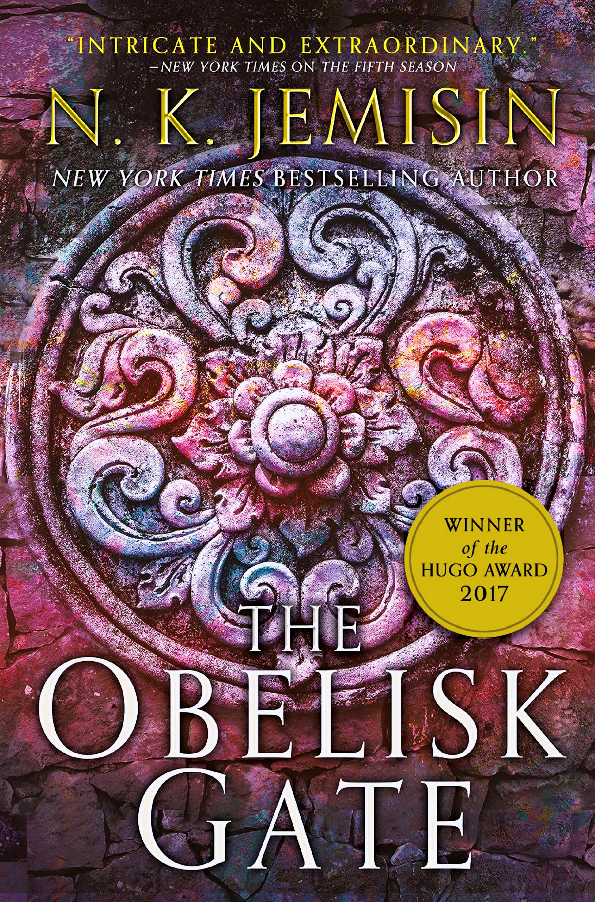

"The Obelisk Gate"
- Read on 2021-09-08
- Rating: ️️️️️
- Format: 🎧 (13 hours 19 minutes)
Given my fairly positive review of the first book in this series, it's unsurprising I liked this book as well. No gratuitous and graphic sex scenes, but a steady progression of the storyline, as the people of this world attempt to live and survive in a world literally torn apart. The differing points of view, including second-person continues to be interesting. I've already jumped right into the third/final book.
- Prior: The Fifth Season
- Next: The Bomber Mafia